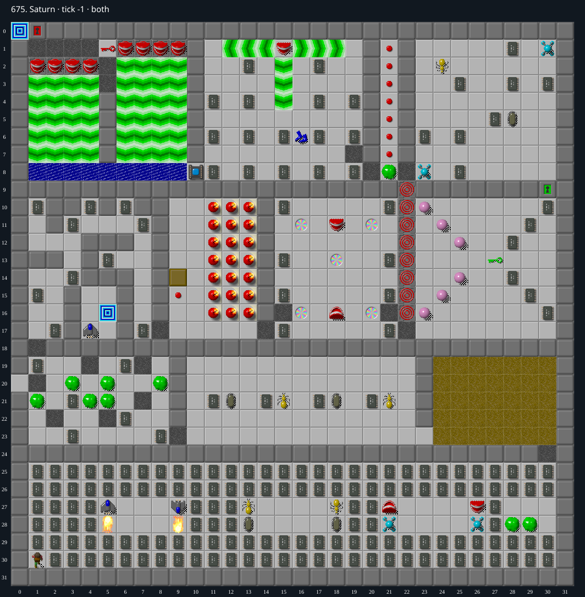

Jacques · Original Tile World MS
675. Saturn
Impossibility argumentBoth exits are inaccessible: one is sealed by permanent walls, and a south-force barrier prevents reaching the red key needed for the other. Blocks cannot provide a safe backstop.
244 chips required · 550 second time limit
Why completion is impossible
- The alternate exit at (5,16) lies in a six-cell component: columns 4–5, rows 15–17. Permanent hidden walls form its boundary, with ordinary walls at (4,18) and (5,18) below. No teleport lies inside, so Chip cannot reach this exit.
- The main exit at (0,0) and the only red key at (5,1) lie north of two south-force fields: columns 1–4 and 6–9, rows 4–7. Permanent walls at columns 0, 5 and 10 prevent side entry at these rows. Row 0 offers no entrance from elsewhere. Neither layer contains suction boots, and no teleport reaches this northern region.
- Any first approach from below must move north from row 8 into row 7. This manual move sets the moved flag. Before another manual move is allowed, the next even-tick force poll moves Chip south again. A move immediately before a four-tick boundary does not help: forced movement occurs before the flag reset and manual input. A subsequent north move returns only to row 7.
- A safe backstop cannot appear in the row 8 cell that Chip just vacated. Row 8, columns 1–9, initially contains water; filling it with blocks produces dirt. These cells contain no force floor, ice, teleport or cloner, so a block cannot move into the cell autonomously from an adjacent row 8 cell. Permanent walls across row 9 prevent entry from the south.
- A block entering that row 8 cell from the north would first have to pass through Chip at row 7. An ordinary block collision is fatal. The special temporary squish state applies only to a block leaving a cloner, and no cloner is adjacent to this barrier. A monster in the destination also causes a lethal collision rather than providing a safe backstop.
- Chip’s forced movement runs before forced movement of blocks and monsters. Pushing a block north onto the south-force field cannot create a higher starting position: the block becomes sliding, and MS rejects another push parallel or opposite to its sliding direction. The lower block cloner therefore supplies no way to defeat the row 7 obstruction.
- Thus every surviving visit to row 7 returns to row 8 before Chip can climb to row 6. Chip cannot reach the red key or pass the red door at (1,0) to the main exit. The other exit is sealed, so no legal MS play can complete the level.
Inspect both layers
The main map shows the initial runtime state. Switch to the buried layer to inspect hidden terrain and items. Hover coordinates are also available in the downloadable SVG.


Recorded checks and attempts
- DAT two-layer inventory: Exact DAT metadata/layers decoded; initial production runtime loaded and rendered with repository sprites.
- independent semantic review: A second investigator inspected both map layers, the sprite map, and native force, block and collision code. The review checked four-tick boundary timing, the order of forced movement, all directions from which a backstop could enter row 8, and the cloner-only squish exception. No surviving route across the barrier was found; the argument is an invariant, not a failed search.
Scope and limitations
- Ordinary legal MS play; cheats and editor changes excluded.
Evidence
- Structured report
- web/src/ruleset-ms/impl/builtinLevelRegistration.ts
- legacy_c/mslogic.c:1002-1011 (bounded cardinal movement)
- legacy_c/mslogic.c:1034-1042 (socket/key requirements)
- legacy_c/mslogic.c:1616-1736 (arrival/terrain effects)
- legacy_c/mslogic.c:1825-1832 (exit completion)
- web/src/ruleset-ms/impl/chipMovement.ts:104-108 (TypeScript completion)
- legacy_c/mslogic.c:1347-1370 (manual movement flag and force override)
- legacy_c/mslogic.c:1916-1958 (forced moves clear moved flag after the forced displacement)
- legacy_c/mslogic.c:2380-2404 (forced movement precedes manual input)
- legacy_c/mslogic.c:962-968 (parallel/opposite sliding-block push rejected)
- legacy_c/mslogic.c:1833-1842 (ordinary collision and cloner-only squish exception)
- legacy_c/mslogic.c:1860-1870 (leaving forced terrain ends sliding)
- legacy_c/mslogic.c:2017-2027 (Chip forced movement precedes blocks and monsters)